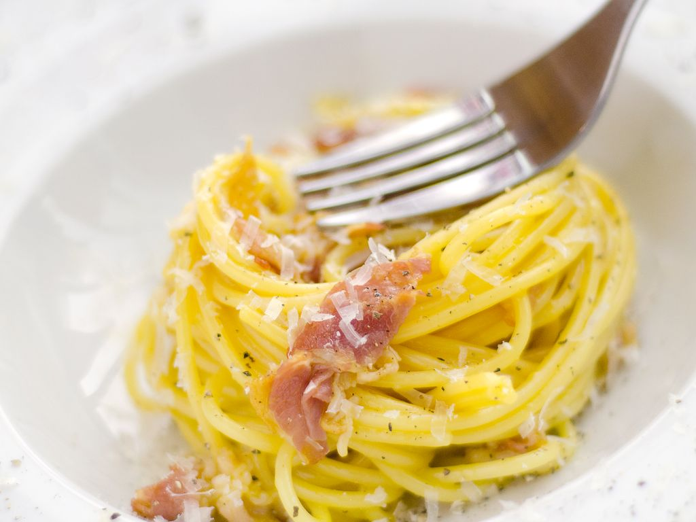

La cuisine d Alex et Marco
La recette des pates carbo !

Ingrédients
-
6 pincées de poivre
-
3 pincées de sel
-
6 jaunes d'oeuf
-
500g de pancetta
-
50g de parmesan Reggiano
-
1 cuillère à soupe d'huilde d'olive
-
300g de pâtes
Préparation
- Battre les jaunes d'œufs en y ajoutant 1 pincée de sel, 2 pincées de poivre et 40 g de
parmigiano reggiano râpé.
- Remplir une grande casserole d'eau et la faire chauffer avec deux pincées de gros sel.
- Pendant ce temps, couper la pancetta en lamelles grossières et les faire dorer dans une poêle
avec 1 cuillère à soupe d'huile d'olive.
- Quand l’eau dans la casserole commence à bouillir mettez vos pâtes.
- Prendre deux cuillères à soupe d'eau de cuisson des pâtes, les verser dans le jaunes d'œufs puis
remuer.
- Réservez la pancetta et laissez la poêle au chaud.
- Une fois la cuisson des pâtes al dente, les égoutter sommairement et les mettre dans la poêle et
remuer.
- Verser le mélange dans un saladier et incorporez la préparation des jaunes d'œufs.
- Ajouter la pancetta et deux pincées de poivre. Servez.